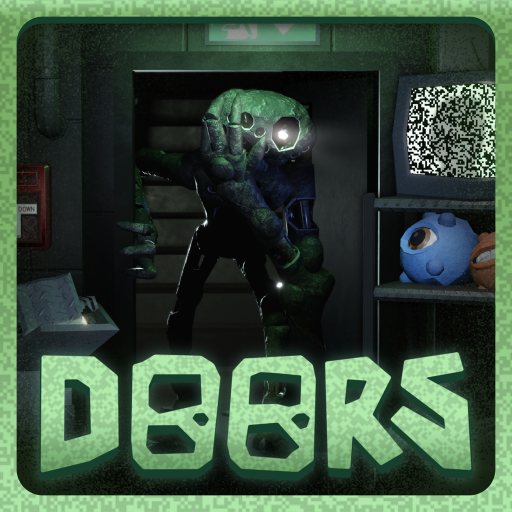
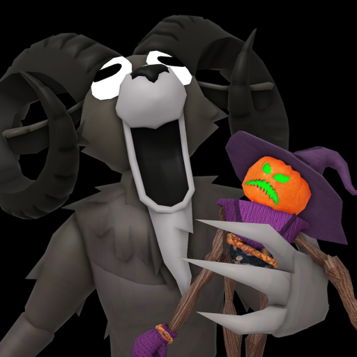

📰 VEXU HQ · Știri

CONFIRMAT📅 14 octombrie 2026
⌨️ +1 Speed Keyboard Escape primește o lume nouă de Halloween
Halloween World e deschisă de pe 17 oct, ora 21:00, până pe 24 oct, ora 21:00 RO; pe 10 oct a fost evenimentul pregătitor „Halloween AA…
Citește tot →
CONFIRMAT📅 14 octombrie 2026
🐎 Update-ul cu Mounts a ajuns în Steal An Egg
Din 10 oct îți călărești pet-urile; eventul de lansare a fost 10 oct 18:00 → 11 oct 22:00 RO, iar mount-urile au rămas în joc.
Citește tot →

CONFIRMAT ZVON📅 14 octombrie 2026
❓ Roblox anunță ceva misterios pe 22 octombrie
Data e confirmată de @Roblox („you've met them before. but not like this.”, 10.22.26). Numele „The Hollow” și jocurile implicate (Piggy,…
Citește tot →

CONFIRMAT ZVON📅 14 octombrie 2026
🍬 DOORS lansează The Candy Vault pe 22 octombrie
Confirmat: joi, 22 oct, 21:00 RO → 9 nov. Legătura cu teaserul Roblox e zvon. MORE INFO SOON — conținutul încă nu e anunțat.
Citește tot →

CONFIRMAT📅 14 octombrie 2026
👻 Adopt Me: Hauntlet Returns + Halloween Ghost Gallery
Din 3 oct e live Hauntlet Returns: îl adopți pe Bolt, Poltergeist Box, pet-urile pe Candy Corn. Plus Ghost Gallery: îl învingi și îl…
Citește tot →

CONFIRMAT ZVON📅 14 octombrie 2026
🔮 Dress to Impress: HALLOWEEN🔮 începe pe 17 octombrie
Confirmat: 17 oct 18:00 → 7 nov 18:00 RO. Quest-ul „Tales of the Dark King” apare doar în presă, deci e zvon.
Citește tot →

CONFIRMAT📅 14 octombrie 2026
🌲 99 Nights in the Forest: vine Trick or Treat
17 oct 20:00 → 24 oct 15:00 RO.
Citește tot →
VEXU LIVE📅 14 octombrie 2026
Portalul se deschide sâmbătă! Ce urmează pe live-urile VEXU 👻
Urmează câteva seri de live pe Steal An Egg. Sâmbătă, 17 octombrie, la 18:00 (ora României), se deschide Halloween Dimension, eventul…
Citește tot →

VEXU LIVE📅 14 octombrie 2026
Cele mai tari momente de pe live-urile VEXU: am călărit pet-urile! 🚀
Update 8 a adus Mounts în Steal An Egg, iar jocul a bătut recordul all-time, cu aproape 12 milioane de jucători în același timp. Pe…
Citește tot →
CONFIRMAT📅 14 octombrie 2026
🎃 Halloween Dimension vine în Steal An Egg!
Eventul pornește sâmbătă, 17 octombrie, la 18:00 (ora României) și ține până sâmbătă, 24 octombrie, la 17:00. Portal, boși, monștri, ouă…
Citește tot →
CONFIRMAT📅 14 octombrie 2026
🚫 Nu există coduri de Halloween
Atenție la țepe: Steal An Egg nu are sistem de redeem, deci nu există coduri de Halloween.
Citește tot →

CONFIRMAT📅 14 octombrie 2026
🚀 Roblox simplifică publicarea jocurilor
Roblox face mai simplu drumul spre publicare, iar creatorii pot invita până la 10 testeri înainte de lansare.
Citește tot →

CONFIRMAT📅 14 octombrie 2026
🛍️ Licențe pe IP-uri oficiale pentru iteme UGC
Creatorii pot face iteme de avatar bazate pe IP-uri oficiale, prin licențe din Marketplace.
Citește tot →